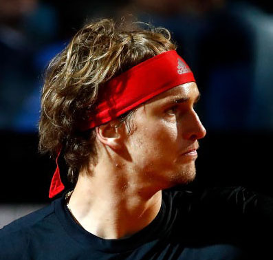
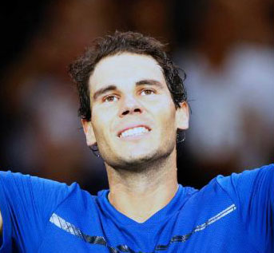
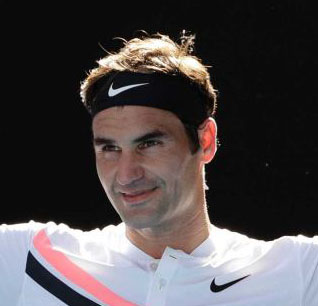

Alexandr Zverev
Alexander Zverev was born in a tennis family of emigrants from Russia. His father is Alexander Zverev, a senior, former professional tennis player who played for the USSR. In 1991, together with his wife Irina and the eldest son Misha, he moved to Germany. Mikhail Zverev is also a professional tennis player representing Germany. Now the Zverev family lives in the USA. Sportswear - Adidas, Racket - Head. In the past year, Sasha performed in St. Petersburg in his homeland, and won this tournament by defeating Stan Wawrinka.
Rafael Nadal
Rafael Nadal Parera (Rafael Nadal Parera, born June 3, 1986 in Manacor, Spain) is a Spanish tennis player, ex-first racket of the world in singles. For his career he won 16 wins in the Grand Slam singles, including a record 10 times won the French Open. The owner of a career "Golden Helmet" in singles (victory in all tournaments of the Grand Slam and Olympic gold is not one year). The most successful performer on the ground courts, which won a record 55 tournaments, for which he was nicknamed "King of the Ground" [9] [10] [11] [12] [13] [14] and many experts and athletes consider him the best tennis player in the world soil in history. He is the only tennis player in the Open Age, who won one tournament at least 11 times (Monte-Carlo Rolex Masters and Barcelona). Also the only tennis player in history who won one tournament at least 10 times (Roland Garros). Father Raphael - Sebastian - a businessman who owns an insurance company and a restaurant. Mother - housewife, since 2007 - President of the Rafael Nadal Foundation. He has a younger sister Maria Isabel. Since childhood Nadal coached his uncle, brother of father Tony Nadal, Rafael himself said that Tony instilled in him a love of tennis in three years [21]. His other uncle, Miguel Angel Nadal, played football professionally, playing for "Mallorca" and "Barcelona". Nadal is a fan of "Mallorca" and "Real Madrid".
Roger Federer
Roger Federer (born Roger Federer, born August 8, 1981 in Basel, Switzerland) is a Swiss professional tennis player, the first racket of the world in singles. A number of specialists and athletes called Federer the best tennis player in history [6] [7] [8] [9] [10]. He has many records, including 20 titles in Grand Slam tournaments in men's singles and 308 weeks in total in the first place in the world ranking (237 consecutive weeks). Continuously entered the top 10 world ranking in singles from October 2002 to November 2016. July 16, 2017 was the first in the history of tennis 8-fold champion of the Wimbledon tournament among men in singles, bypassing Pete Sampras and William Renshaw.